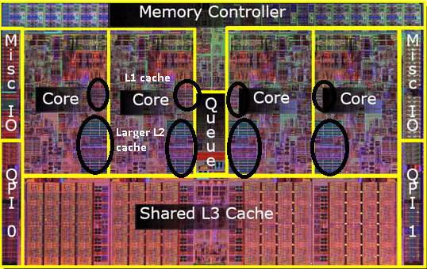
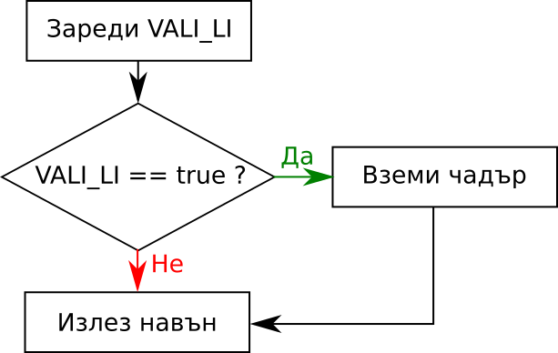
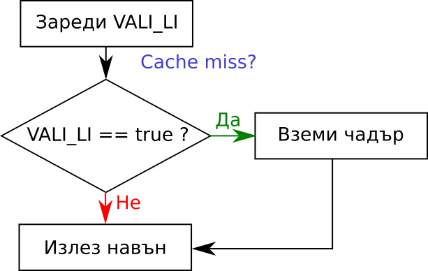

Hello, World
- Борислав aka Боби aka iboB
- Предимно С++ програмист
- Предимно програмист на игри
- Занимавам се с open source

Optimization is the root of all evil
Donald Knuth
Optimization is the root of all evil
Donald Knuth
Premature optimization is the root of all evil
Donald Knuth
Premature optimization is the root of all evil
Donald Knuth
We should forget about small efficiencies, say about 97% of the time: premature optimization is the root of all evil
Donald Knuth
Ще говорим до голяма степен за тези 3%

To some extent, optimization is to our industry what sexual intercourse is to teenagers. There's a veil of awesomeness surrounding it; everybody thinks it's cool, has an opinion about it, and talks about it a great deal; yet in spite of ample folklore, few get to do it meaningfully or at all.
Andrei Alexandrescu
Ще говорим за фундаментални принципи, а не за алгоритми

2018-та година е. Кой пише за CPU?
Благовест Тасков
Защо CPU, а не GPU?
- GPU е ултрамегамощно за някои задачи.
- Дрън дрън архитектурни разлики
- За тези задачи GPU не е добър избор:
- Малко данни: PCI-bus overhead
- Непаралелизируеми алгоритми
- Понякога сме GPU-bound
- Някои неща важат и за GPU
Ще се фокусираме върху по low-level концепции и няма да говорим за multi-threading.
Ще говорим за хардуер... поне отгоре-отгоре
О-нотация
- Асимптотична оценка на сложността на алгоритми
- Полезна и много широко използвана
- Θ-нотация, Ω-нотация, и т.н.
- Оценява се нарастването на сложността спрямо нарастването на входа
- Оценка с малките букви (о, θ, ω) - често прекалява
- Реалната сложност все пак съществува
Пример: О(1)
Да се вземе шестия елемент от контейнер.
std::vector<int> v;
...
int sixth = v[6]; // !
Теоритична реална сложност: 1
std::list<int> l;
...
auto isixth = l.begin();
for(int i=0; i<6; ++i) ++isixth;
int sixth = *isixth; // !
Теоритична реална сложност: 6
Пример: О(n)
Да съберат елементите от списък.
int sum = 0;
for(auto elem : container) sum += elem;
Теоритична реална сложност: n
point3 sum = {0, 0, 0};
for (const auto& elem : container) {
sum.x += elem.x;
sum.y += elem.y;
sum.z += elem.z;
}
Теоритична реална сложност: 3n
Хакване на О-нотацията
Константна сложност: 1000.
- Линейна за по-малко от 1000 елемента е по-бърза
- Квадратна за по-малко от 32 е по-бърза
- Кубична за по-малко от 10 е по-бърза
Линейна сложност: 100n.
- Квадратна за по-малко от 100 е по-бърза
- Кубична за по-малко от 10 е по-бърза
...
Полезно да е имаме представа за реалната сложност и за размера на входа
Съвременният хардуер прави реалната сложност практически неизчислима
Но, все пак...
Cache ($)
Кешът е памет близко до процесора
Cache levels - колкото по-близко, толкова по-бързо

RAM (→ L4?) → L3 → L2 → L1
Как работи това?
От "Дай памет на адрес Х!" следват потенциално различни стратегии. Например:
4KB на L3 → 256B на L2 → 64B на L1
- Ако паметта е в кеша - cache hit
- Ако я няма - cache miss
Колко ни струва това?
- L1: ~4 цикъла
- L2: ~10 цикъла
- L3: ~20 цикъла
- RAM: ~100 цикъла
Какво значи това?
- Бързи работи:
- Value types / PODs
- Contiguous memory
- Бавни работи:
- Индирекции
- Включително динамичен полиморфизъм
- Array-of-structs vs Struct-of-arrays
По-малко кеш мисове, по-щастлив процесор
Българска народна поговорка
Видове кеш
- Data - Нашите данни. Това което гледахме
- Instruction - кодът на програмата. Демото е трудно :(
- TLB - за виртуалната памет. Нямаме контрол върху него
- Всички тези са L1. L2+ са смесени
Branch
Разклонение в програмата

Branch
Разклонение в програмата

CPU ОоО Pipeline

Чакането е скъпо
Branch predictors
- Branch @ 0x12300 :
y,n,n,y,y,y,y,y
- Loop predictors - има и такива
__builtin_expect - леко безсмислено- Ако няма идея? - Изпълняваме и двата бранча
Спекулативно изпълнение: Изпълнението на код, който може би не трябва да бъде изпълняван
Изводи
if вече не е толкова страшен- Dense is better than sparse
I believe that order is better than chaos
Kenneth Clark
Syscalls и алокации
Най-вече алокации!
Syscall
Напускаме пределите на нашата програма и се отправяме в света на операционната система
Syscall примери
- Не рънтайм като
sin, cos, qsort
- I/O
Ако нещо е бавно и не е очевидно какво е, най-вероятният виновник е I/O
Аз
- Менажиране на процеси и нишки
- Драйверни извиквания като OpenGL
- Алокации и деалокации
Алокации и деалокации
- Явна цена
- Операционната система трябва да извърши една камара неща.
- Физическата памет: страници
- Свободно парче поредни страници
- Синхронизация между различни процеси и нишки
- Commit size - много помага
- Не-толкова-явна цена
- Нулиране/Изчистване на памет
- Фрагментация
- Всяка алокация и деалокация е syscall
Какво да направим?
- Билярди и басейни (сиреч pools)
- Защо Жаба е по-бърза от С++?
- Преизползване на обекти
- Code it like it's 1969. Масиви с фиксиран размер
- Reserve (например
std::vector::reserve)
Какво ни коства това?
- Повече памет
- По-сложен и труден за четене код
- По-дълго време за зареждане
- В краен случай malloc-lite: Да решаваме проблемите, които операционната система решава
- За щастие в 90% от ситуациите можем да минем с 10% от усилията
Instruction set
- Какво може нашия процесор?
- Не всички са достъпни през С или С++
- Компилаторите ни дават начин да ги достъпим чрез intrinsics
Недостатъци
- Compiler-specific
- Architecture-specific
#ifdef ту дъ рескю
Заслужава си да ги прегледате и може би да откриете неочаквани прозрения
Single Instruction Multiple Data
- x86
- MMX, SSE, SSE2, SSE3, SSE4, SSE5, AVX, FMA, AVX2, AVX-512
- ARM
- Управляват се с интринсики
- Внимавайте с alignment
- Компилаторите са мощни!
Beyond
- Това всичко беше повърхностно
- За да спечелите от хардуера, трябва да го познавате
- Четете повече дисасембли
- Винаги бенчмарквайте
- ???
- Profit
Бонус: Hyperthreading
... и как може да ни пореже

Бонус: Meltdown
char* memory = new char[0x200];
if (something_false) {
char value = *(char*)(KERNEL_MEM_PTR);
int index = (value & 1) * 0x100;
puts(memory[index]);
}
measure_time_to_access(memory[0]);
measure_time_to_access(memory[0x100]);
Бонус: Spectre
if (some_condition) {
hidden_val = hidden_data[N];
whatever = public_data[hidden_val]; // o_O
}
- Branch-prediction е трудно: Частично адресиране
- Branch predictor poisoning: Програма която има
if(true) на същия частичен адрес
Бонус: Spectre
if (some_condition) { // на кой адрес е това?
hidden_val = hidden_data[N];
whatever = public_data[hidden_val]; // o_O
}
- Branch-prediction е трудно: Частично адресиране
- Branch predictor poisoning: Програма която има
if(true) на същия частичен адрес
for(auto& elem : public_data) {
measure_time_to_access(elem);
}
Нямаше реални примери, но се откриха